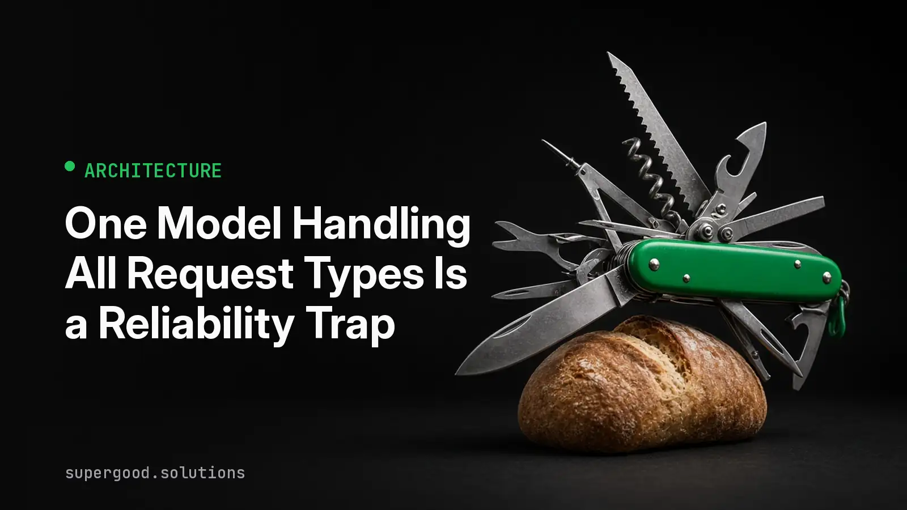

One Model Handling All Request Types Is a Reliability Trap
TL;DR: If every request in your system hits the same frontier model at the same settings, your output variance is partly self-inflicted. A small dispatch layer that sorts requests before the model sees them fixes reliability first and saves money as a side effect.
Key Insight
Most teams treat model routing as a cost lever. Send the easy stuff to a cheap model, keep the bill down. That framing is why so many routers get cut in the first budget review.
The stronger case is reliability. A request to classify a support ticket into one of twelve categories and a request to synthesize a forty-page contract into a risk memo are different jobs. They need different amounts of reasoning, different output constraints, and different failure handling. When both go through one model with one prompt style and one reasoning setting, the model has to guess how hard to think. Sometimes it overthinks the trivial case and returns a creative answer where you wanted a label. Sometimes it under-thinks the hard case and skips a step.
That guessing is the variance you see in production and can't explain. The same model, the same prompt template, and two runs that disagree. The model didn't get worse. The task and the effort were mismatched.
Research on routing backs up the basic premise. The RouteLLM project trained routers that choose between a strong and a weak model per query, and reported large cost reductions while holding most of the strong model's benchmark quality. A recent survey of dynamic routing and cascading makes the same point from the other direction: static deployment ignores the complexity of the incoming query, and that leads to suboptimal results.
Why Teams Miss This
Three assumptions get in the way.
First, "the frontier model can handle everything." True on average. But reliability is about the tail, and the tail is where a model with too much freedom does something unexpected on a simple task.
Second, one endpoint is easier to operate. It is, until you are debugging why 3 percent of classifications came back as paragraphs. One endpoint hides the fact that you are running several distinct workloads with different quality bars.
Third, routing sounds like a research project. It doesn't have to be. You do not need a learned router on day one. You need to admit that your traffic has more than one shape.
A typical pattern in enterprise deployments: an intake assistant handles ticket tagging, field extraction from emails, policy questions, and multi-document escalation summaries through a single prompt and a single model. The tagging and extraction paths are high volume and need strict, boring output. The escalation path is low volume and needs deep reasoning. Tuning the shared prompt for one path degrades another, so the team keeps patching and never converges.
How to Actually Do It
Start with a binning pass, not a model zoo.
- Pull a week of real requests and label them by hand into three to five bins. Good starting bins: deterministic transforms (extract, classify, reformat), grounded lookups (answer from a retrieved passage), multi-step synthesis, and edge cases that need a human or a stronger model.
- For each bin, write down the output contract. A classifier returns one label from a closed set. A synthesis task returns structured sections with citations. If you can't state the contract, you can't measure reliability.
- Put a cheap classifier in front. A small model, a fine-tuned encoder, or even rules on input length and source system will cover most traffic. Log its decision with every request.
- Map each bin to a model tier and a reasoning setting. Trivial bins get a small model, low or no reasoning effort, and constrained decoding. Hard bins get the strong model with room to think.
- Add an escalation path. If a cheap-tier response fails schema validation or a confidence check, retry once on the next tier up instead of returning garbage.
- Evaluate per bin. A single aggregate accuracy number hides exactly the variance you are trying to remove.
A minimal dispatcher looks like this:
from dataclasses import dataclass
@dataclass
class Route:
model: str
effort: str # "none", "low", "high"
schema: str
ROUTES = {
"classify": Route("small-model", "none", "label_v1"),
"extract": Route("small-model", "low", "fields_v2"),
"grounded_qa": Route("mid-model", "low", "answer_v1"),
"synthesize": Route("frontier-model", "high", "memo_v3"),
}
def dispatch(request, binner, call_model, validate):
bin_name = binner(request) # cheap classifier or rules
route = ROUTES.get(bin_name, ROUTES["synthesize"]) # unknown goes up, not down
result = call_model(route.model, route.effort, request)
if not validate(result, route.schema) and route.model != "frontier-model":
route = ROUTES["synthesize"]
result = call_model(route.model, route.effort, request)
log(request.id, bin_name, route, result)
return resultNotice the default. When the binner is unsure, it routes up. A misrouted hard request is a quality incident. A misrouted easy request is a few extra cents.
What We've Learned
The first win from routing is usually not the invoice. It is that your eval numbers per bin stop wobbling, because each bin now has one job, one contract, and one set of settings.
Your next experiment: take your highest-volume request type, route it to a smaller model with a strict output schema, and compare disagreement rates across repeated runs against what the frontier model gives you today. If variance drops, you have your case for building the rest of the dispatch layer.
Sources
- RouteLLM, a framework for serving and evaluating LLM routers: github.com/lm-sys/RouteLLM
- RouteLLM: Learning to Route LLMs with Preference Data: arxiv.org/abs/2406.18665
- Dynamic Model Routing and Cascading for Efficient LLM Inference, a survey: arxiv.org/abs/2603.04445
- LLM Routing in Production, complexity-based routing signals: blog.nepexgroup.com
Have a specific workflow in mind?
The fit check comes first. It takes about 2 minutes. If it's a fit, Ryan follows up to schedule the paid Quick Scan ($1,000): a live working session where we'll tell you honestly whether it should be an agent, a workflow, or left alone, before you spend a dollar building it. You get 3 prioritized recommendations on the call, a one-page summary after, and the fee is credited toward a build if you sign within 14 days.
Get new posts + practical agent-ops notes
One email when something new goes up. No nurture sequence, no spam — unsubscribe whenever you want.